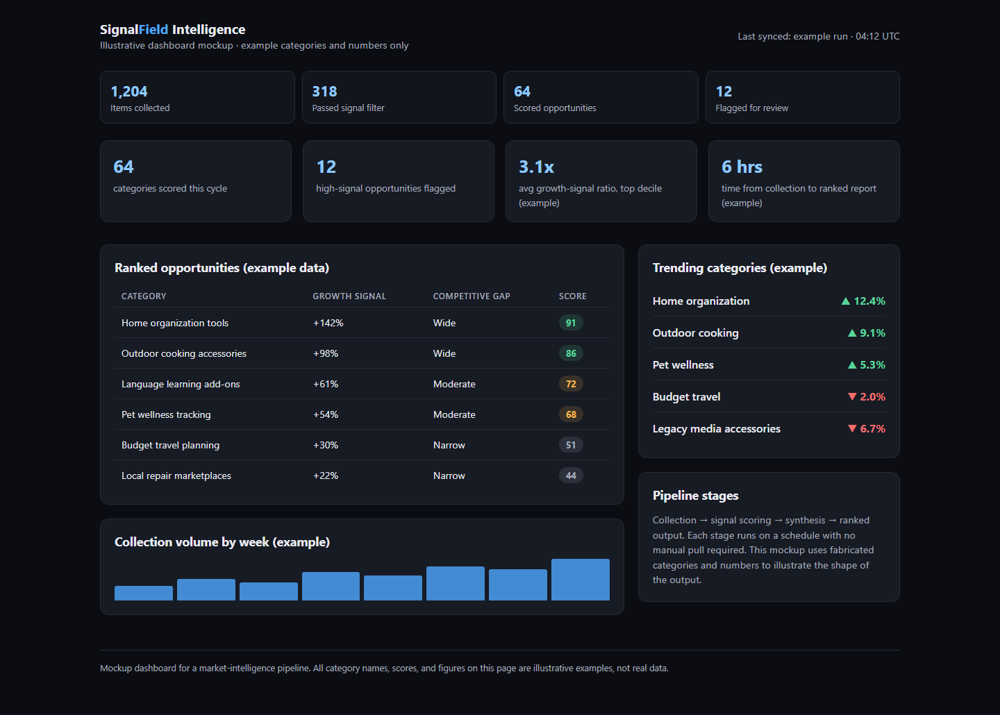

An automated pipeline that turns raw market data into a ranked opportunity list
How a manual, once-a-quarter research exercise became a scheduled pipeline that runs itself and hands back a ranked report.
Why is manual market research a problem?
It's slow, inconsistent between people, and stale by the time a report is finished.
Spotting where a market is growing, or where a gap in the competition is opening up, is normally a slow, manual research exercise: pull data by hand, eyeball it in a spreadsheet, and try to remember to redo the whole thing next quarter. It's inconsistent between people, easy to skip when things get busy, and by the time a report is finished the data underneath it has already moved.
How does the market intelligence pipeline work?
It runs four automated stages, collection, scoring, synthesis, ranked output, with no manual pull required.
An automated, multi-stage pipeline that collects data from public sources on a schedule, scores each item for growth signal and competitive gap, synthesizes the results, and produces a ranked output automatically, no manual pull required.

A dashboard view of the pipeline's output: ranked opportunities, trending categories, and pipeline volume in one screen.
Outcome
Tech approach
Built in Python against free public API endpoints, with a lightweight scoring layer that ranks categories by growth signal and competitive gap rather than raw volume. Results are stored in SQLite and exported to a spreadsheet report so the output is easy to hand to a non-technical reader. The whole pipeline is designed to run unattended on a schedule and produce a ready-to-read report at the end, not a dataset that still needs a human to interpret it.
Related systems
Customer-Success Command Center · a command center that replaced five spreadsheets with one screen and credited $30,590 in retained revenue.
Price History Tracker · stitches every price sheet into one self-refreshing time series, built in a day.
AI-Visibility Audit · a structured audit run on this very site to make it findable, trusted, and quotable by AI answer engines.
Video-to-Documentation Pipeline · turns one monthly walkthrough recording into four polished, branded release documents automatically.